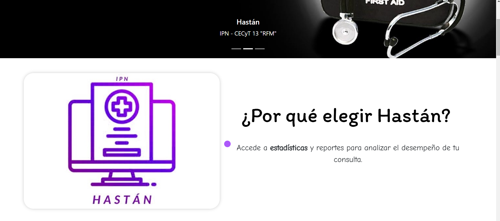
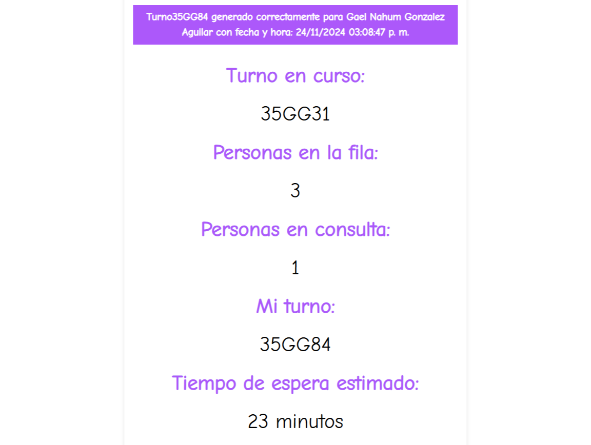
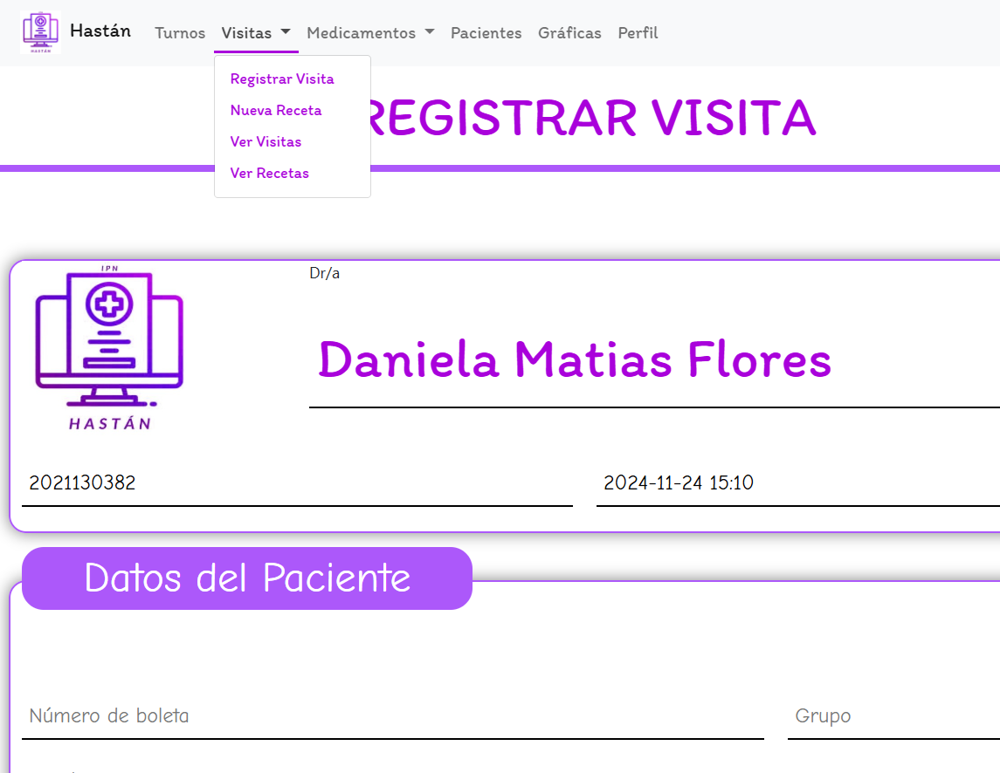
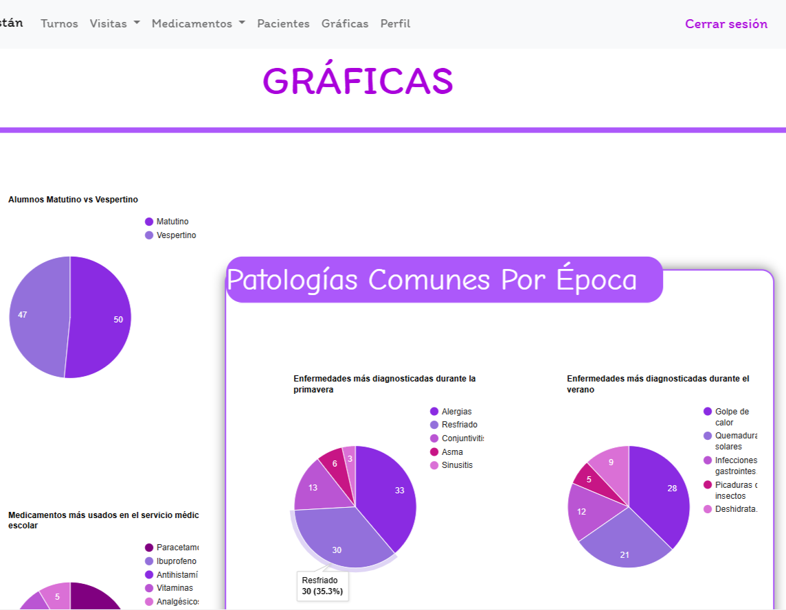

Pacientes
Registro y consulta de información del paciente, incluyendo datos personales y médicos.
PROYECTO 01 · SISTEMA WEB
Plataforma web desarrollada para digitalizar y organizar distintos procesos de un servicio médico, centralizando pacientes, turnos, recetas, medicamentos y estadísticas dentro de un mismo sistema.
Gestión médica desde una sola plataforma
Pacientes · Turnos · Recetas · Medicamentos · Estadísticas
EL PROYECTO
01
La gestión manual de pacientes, turnos, recetas y medicamentos puede provocar información dispersa, pérdida de tiempo y dificultades para consultar rápidamente el historial de atención.
02
Hastán centraliza los principales procesos del servicio médico en una aplicación web, permitiendo administrar información y realizar tareas desde una misma interfaz.
FUNCIONALIDADES
Cada módulo fue diseñado para resolver una parte específica del flujo de atención.
Registro y consulta de información del paciente, incluyendo datos personales y médicos.
Gestión de la fila de atención, turno actual, personas esperando y tiempos estimados.
Creación de recetas médicas y consulta del historial de recetas de cada paciente.
Administración del inventario de medicamentos, existencias, observaciones y características.
Visualización gráfica de información relacionada con turnos, áreas y comportamiento del servicio.
Diferentes funciones e interfaces dependiendo del tipo de usuario dentro del sistema.
GALERÍA
Algunas de las principales interfaces y módulos desarrollados para Hastán.

Vista general desde donde el usuario puede acceder a las principales funciones del sistema.

Control del turno en curso y de los pacientes que se encuentran esperando atención.

Creación y consulta de recetas asociadas al historial de cada paciente.

Información del servicio representada mediante gráficas para facilitar su interpretación.
DEMOSTRACIÓN
Estos videos muestran el funcionamiento del sistema desde las dos perspectivas principales: paciente y doctor.
Recorrido por las principales funciones disponibles para el paciente, incluyendo su interacción con el sistema y el acceso a la información relacionada con su atención médica.
Demostración de las herramientas disponibles para el personal médico, como la gestión de pacientes, turnos, recetas y otros procesos administrativos dentro del sistema.
DESARROLLO
Durante el desarrollo trabajé con una arquitectura MVC, conexión y consultas a SQL Server, manejo de sesiones, operaciones CRUD y diferentes interfaces para los usuarios del sistema.
También se implementaron herramientas como generación de documentos PDF, gráficas estadísticas y componentes responsivos para distintas resoluciones.
ESTADO DEL PROYECTO
Hastán actualmente no cuenta con una demostración pública activa. Las imágenes de esta página muestran las principales funciones e interfaces desarrolladas durante el proyecto.
¿Quieres conocer otros proyectos?
Volver a proyectos